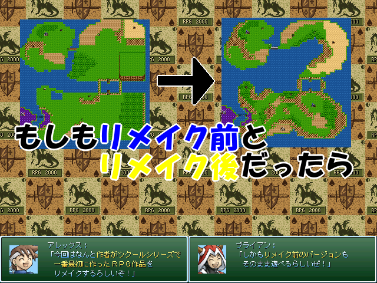

| No.23 もしもリメイク前とリメイク後だったら | |
 | |
| 【作者名】ろーぷれつくろ～ | |
| 【使用ツール】2000 | |
| 【ジャンル】リメイク前と後の比較を楽しめるＲＰＧ | |
| 【配信/投稿】ご自由に/どうぞ | |
| 【作者コメント】 ＧＷ祭り初参加！ 作者がツクールシリーズを触り始めて 一番最初に完成させたＲＰＧを全力でリメイク！ アレックスが魔王を倒すため一人で冒険する王道ＲＰＧ！ そしてリメイク前のバージョンもまるごと収録！ どちらか一方だけでも楽しめますが、 リメイク前とリメイク後をそれぞれ比較しながらプレイすれば より楽しめるかも！？ ※注意 この作品はゲームフォルダが２つ存在します。（リメイク前とリメイク後で１つ ずつ） またどちらのバージョンから始めても楽しめますが リメイク前→後の順番でプレイするとさらに楽しめると思います。 | |
| 【管理人コメント】 サルベージの鬼。 | |
| ダウンロード(811KB)/感想掲示板 | |
| 前の作品/次の作品 | |